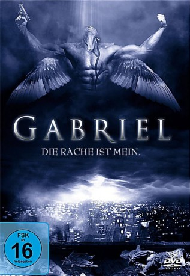
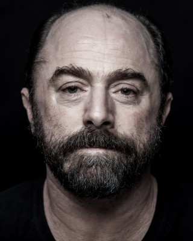
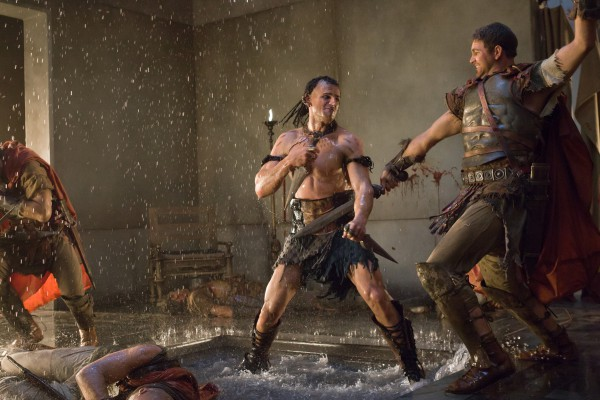

#11290 Gabriel - Die Rache ist mein
 
 IMDB-Wertung: 5.6 / 10
IMDB-Wertung: 5.6 / 10  Metascore: 0
Metascore: 0 
Bereits sechs Erzengel sind gefallen beim Versuch, das Purgatorium, jene unheimliche Zwischenwelt zwischen Himmel und Hölle, zurück unter die Kontrolle des Lichts zu bringen. Jetzt muss es Gabriel versuchen und in Menschengestalt hinabsteigen in eine Welt aus Hass und Schmerzen, in der Gott fern, Dämonen mächtig und selbst ein Engel seiner unsterblichen Seele nicht mehr sicher ist. Beim Kampf gegen den ultrafinsteren Sammael findet er eine Gefährtin in der gefallenen Himmelsschönheit Jade...
Jahr: 2007
Dauer: 114 Minuten
FSK: 16
Land: Australien Studio: Sony Pictures Home EntertainmentTonspuren: DD5.1 - , - , - ,
Untertitel: Deutsch, Englisch,
Auflösung: 1080p (1920x1080) Größe: 6635 MB
Genre: Action, Thriller, Horror, Fantasy
Regisseur: Shane Abbess
Drehbuch: Matt Hylton Todd, Shane Abbess, Matt Hylton Todd, Shane Abbess
Soundtrack: Brian Cachia
Darsteller:
- Andy Whitfield als Gabriel
- Samantha Noble als Jade
- Michael Piccirilli als Asmodeus
- Erika Heynatz als Lilith
- Harry Pavlidis als Uriel
-  Brendan Clearkin als Balan
- Valentino del Toro als Baliel
- Paul Winchester als Marcus
- Jack Campbell als
- Kevin Copeland als
 Goran D. Kleut als
Goran D. Kleut als - Amy Mathews als
- Richard Huggett als
- Christian Clark als
- Johan Earl als
- Denai Gracie als
- Aaron Scully als
-  Stephen Dunlevy als
- Leanne Mangan als
- Micharne Cloughley als
- Emma Mothersdill als
- Sai Gundewar als
- Dwaine Stevenson als Sammael
- Matt Hylton Todd als
- Rebecca Ranclaud als
- Alan Flower als
- Naomi Ormont als
- Lewis Chan als
- Robin Royce Queree als
- Katherine Giovenali als
- Az Jackson als
- Amber Gokken als
- Sandi Finlay als
- Dion Phillips als
- Carly Ison als
- Peter Klappas als
- Raphael Masache als
- Ryan Baxter als
- John Lavis als
- Reggie Matson als
- Kellie Vernon als
- Steven Davies als
- Richard Duffty als
- Daniel Itua als
- Emma Hayward als
- Kelly Swartz als
- Jerry Nwajei als
- Hayley Croxton als
- Angela Contreras als
- Noah Isaac Eliu als
Datei: X:\2007(G-M)\Gabriel - Die Rache ist mein (2007, FSK16, 1920x1080).mkv seit 17.06.2019
Festplatte: HD 2007(A-Z)-2008(A-F)
 Es gibt insgesamt 64 Filme in der Gruppe '2007(G-M)'
Es gibt insgesamt 64 Filme in der Gruppe '2007(G-M)'